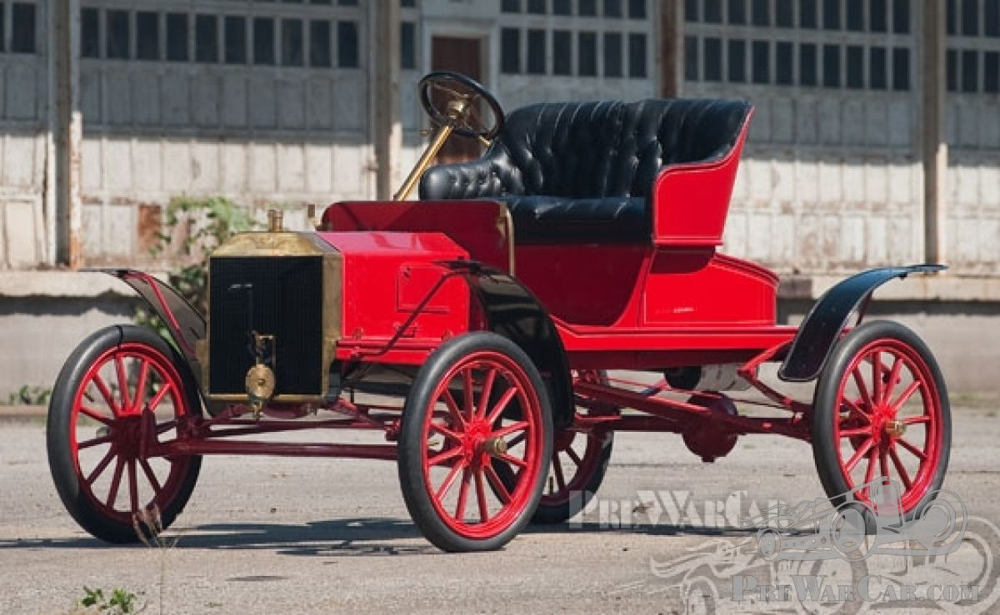
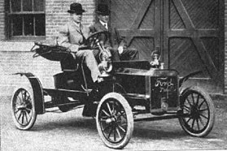
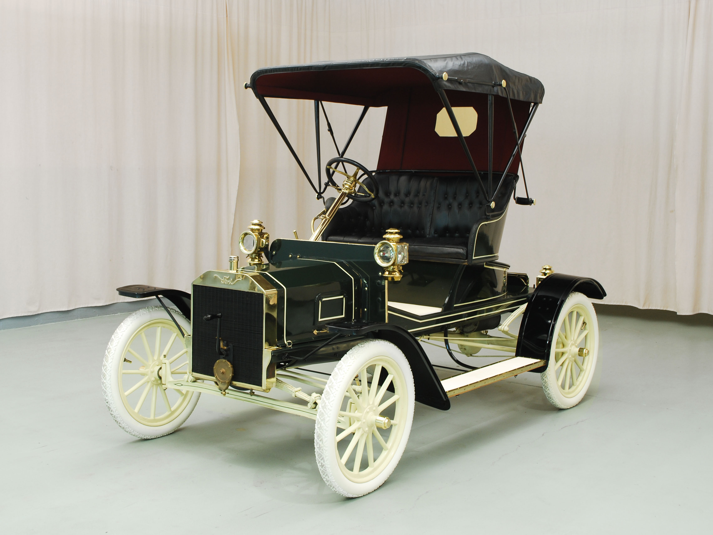
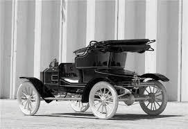
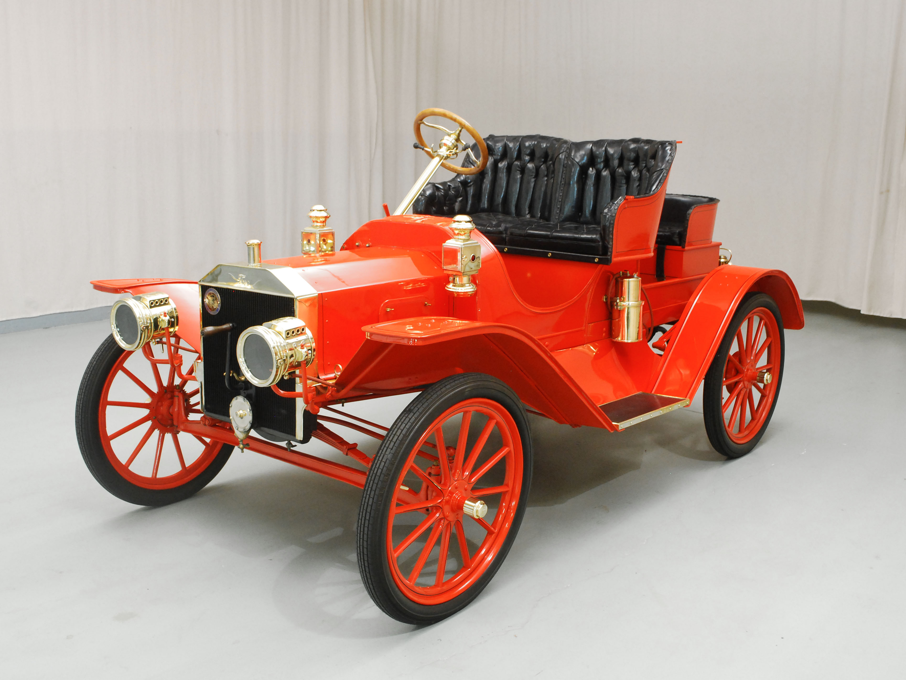
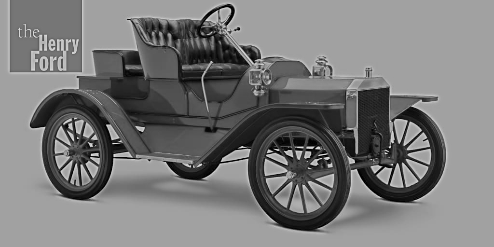

N-Modell
 A Ford Modell n egy gépjármű által termelt Ford Motor Company 1906-ban mutatták be az A és C modellek utódjaként, mint a cég olcsó, belépő szintű termékcsaládja. A Ford Piquette Avenue-i üzemben építették . A Model N annyiban tért el elődeitől, hogy négyhengeres motorral szerelt első motoros autó volt. A 15 LE - s egyenes-négyes hosszú tengelyen keresztül hajtotta a hátsó kerekeket. Ez volt az első amerikai autó, amely vanádium acélt használt . Az autó tengelytávja 2100 mm volt. Sikeres modell, 7000 autót készítettek a gyártás 1908-as befejezése előtt. 500 USD- ért az autót akkoriban rendkívül megfizethetőnek tekintették; ezzel szemben a nagy volumenű Oldsmobile Runabout 650 dollárért ment, a Western Gale Model A 500 dollárért, a Brush Runabout 485 dollárért, a fekete 375 dollárért, a Successért pedig 250 dollárért. A gesztenyebarna volt az egyetlen gyári szín az N modellnél.
R-Modell
 A Model R a Model N magasabb felszereltségi szintje volt, nagyobb karosszériával, kerekei teljes sárvédőkkel , futódeszkákkal és olajlámpákkal. A Model R ára 650 dollár volt, ami 150 dollárral több, mint az 500 dolláros alapmodell N. A Model R 1907-es modellév volt, és 2500-at adtak el. A szín elsősorban sötétzöld volt, bőrülésekkel, sárgaréz szerelvényekkel és 8 US gal (6,7 imp gal; 30 l) üzemanyagtartállyal. Az N-modellhez képest a 30 hüvelykes abroncsok, a lekerekített csomagtartó és a McCord mechanikus olajozó is különbözött a Model N-típusú kipufogógáz-nyomásos olajozó helyett.
S-Modell
 
Két Model S-stílust gyártottak, egy runabout-t és egy roadstert. Az S runabout először az 1907-es modellév végén jelent meg, és hasonló volt a Model R-hez, 50 dollárral kevesebbért kelt el, mint az R, 700 dollárért. Mindkét modellt rövid ideig eladták, mielőtt az R-t az 1908-as modell/pénzügyi évre leállították. Az S roadsternek, akárcsak az R-nek, sárvédői voltak a futódeszkákhoz rögzítve, és egy mechanikus olajozó is volt. Az R-hez képest az N típusú, 28 hüvelykes abroncsok és a hegyes csomagtartó különbözött. A Model S Roadster ugyanazon az alvázon alapult, mint az N, R és S modellek előtte. A Ford 1908-as pénzügyi/modellévében jelent meg, az S Roadster zárt burkolattal, teljes sárvédőkkel és sárvédőkötényekkel, valamint egy harmadik „dübörgő” üléssel rendelkezik. Az R és S futószalagokhoz hasonlóan az SR is McCord nyomású olajozót használt. Az R-hez hasonlóan az S Roadstert is 30 hüvelykes gumikkal szerelték fel. Az S Roadster és a Model K Roadster voltak az utolsó modellek, amelyeket 1908 nyarán gyártottak, amikor a Ford átszerelte és felkészült a Model T megjelenésére . Az S Roadster 750 dollárért kelt el. Olyan extrák voltak, mint a kabrió teteje, gázlámpák és esernyőtartók. 1908 és 1909 között 3750 S Roadstert adtak el.